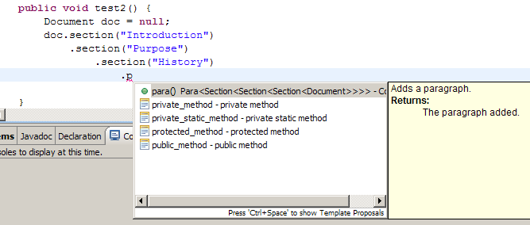

Pecia is a framework for generating documents. For people familiar with Doxia: think Doxia with compile time validation. Just like Doxia, Pecia is intended to provide an abstraction of several output document types. Just like Doxia, it allows you to build the entire document using an API, as opposed to first generate XML and then turn that into your desired output format.
There are however also differences. Big differences. For instance:
The Pecia API works very hard to enforce the document structure. Doxia allows you to build documents that are completely out of whack. For instance, it allows you to add table cells directly to paragraphs. Because of that, people tend to use the Doxia API without actually knowing what Doxia is expecting, or without understanding how Doxia is expected to respond to the API calls. This in turn often results in some output formats failing, and other - more loosely defined output formats - succeeding.
Pecia is different. If you obtain a reference to a {@link nl.flotsam.pecia.Document Document} object, and create a paragraph by invoking {@link nl.flotsam.pecia.Contents#para() para()} on it, you get a {@link nl.flotsam.pecia.Para Para} element allowing you to add paragraph specific content only. No table cells allowed.
Pecia allows you to chain operations, in a - let's just say - DSL-alike way. To produce a itemized list, containing two list items, each one containing an emphasized piece of text, you could code something like this:
document.itemizedList()
.item()
.para().emphasis("yes sir!").end()
.end()
.item()
.para().emphasis("no mam!").end()
.end()
.end();
The thing to not here is that the if you outline your code carefully, it will actually be remarkably clear, and really look a lot like DocBook XML.
The Pecia API intentionally resembles the DocBook document structure. Let's just say that - at this stage - it supports a simplified version of Simplified DocBook.
The Pecia API is very IDE-friendly: Code-completion and mouse-over hints provide valuable information on where you are in your document, as the example below shows.

Notice that the IDE tells you exactly where you
are, when you ask for code completion. In this case, it
suggests to complete p to
para(), an operation on Para of Section of
Section of Section of Document. Mouse-over hints
basically provide similar information.